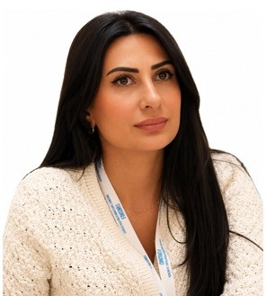

Profil
Sevda Kərimova Vice Versa Consulting Ltd.-də tibbi hüquq üzrə məsləhətçidir. 2009–2014-cü illərdə Naxçıvan Dövlət Universitetində hüquq üzrə bakalavr dərəcəsi, fərqlənmə diplomu ilə, 2014–2016-cı illərdə Bakı Dövlət Universitetində transmilli cinayət hüququ üzrə hüquq magistri dərəcəsi alıb. 2017–2020-ci illərdə AMEA-nın Hüquq və İnsan Hüquqları İnstitutunda bioetika və cinayət hüququ üzrə doktorant olub. dissertasiya müdafiəsinin Bakı Dövlət Universitetinə köçürüldüyü yazılıb. Mövzu cinayət hüququnda yaşamaq və sağlamlıq hüququnun bioetik aspektləridir. Bioetika və tibbi hüquq tədris edib, TƏBİB-də və Hacettepe Universitetinin Bioetika Mərkəzində çalışıb.
İş təcrübəsi
Vice Versa Consulting Ltd., distant
may 2023–hazırdaTibbi hüquq üzrə məsləhətçi
Tibbi etika və tibb tarixi institutu, Rur Universiteti, Boxum, Almaniya
April–May 2023Beynəlxalq qonaq tədqiqatçı
Regional Tibb Bölmələrinin İdarəetməsi (TƏBİB), Azərbaycan
January–July 2022Hüquq şöbəsinin baş mütəxəssisi
TABIB, Azerbaijan
September 2020–January 2022Etika məsləhətçisi
- Elmi tədqiqat və təhsil şöbəsinin etik komissiyalarla iş bölməsi
Təhsil Nazirliyinin Sabah mərkəzi, Bakı Dövlət Universitetinin hüquq fakültəsi
December 2020–June 2021Hüquq müəllimi
Bakı Dövlət Universiteti, hüquq fakültəsi
September 2020–January 2021Saathesabı müəllim
- İnsan hüquqları üzrə UNESCO kafedrası, magistratura
Azərbaycan Elm Assosiasiyası, qeyri-hökumət təşkilatı
March 2020–June 2021Baş direktor
Bioetika Mərkəzi, Hacettepe Universiteti, Ankara, Türkiyə
September 2018–March 2019Beynəlxalq elmi tədqiqatçı
Azərbaycan Dövlət Pedaqoji Universiteti, sosial elmlər fakültəsi
September 2017–August 2019Hüquq müəllimi
Folklor İnstitutu, Azərbaycan Milli Elmlər Akademiyası
July 2012–July 2017Hüquq məsləhətçisi
Müstəqil Elmi-Praktik Hüquq Mərkəzi
January 2010–July 2012Hüquqşünas
Müstəqil Elmi-Praktik Hüquq Mərkəzi
September 2009–January 2010Ofis meneceri
Təhsil
Yay institutu
June–July 2020Bioetika. Sherwin B. Nuland Yay İnstitutu, virtual
Yale Bioetika Fənlərarası Mərkəzi, Amerika Birləşmiş Ştatları
Doktorant
April 2017–March 2020Bioetika və cinayət hüququ. Dissertasiya: Cinayət hüququnda yaşamaq və sağlamlıq hüququnun bioetik aspektləri. Dövlət təqaüdü. Müdafiə Bakı Dövlət Universitetinə köçürülüb
Hüquq və İnsan Hüquqları İnstitutu, Azərbaycan Milli Elmlər Akademiyası, Bakı, Azərbaycan
Magistr dərəcəsi
September 2014–June 2016Hüquq, transmilli cinayət hüququ, ingilis bölməsi. Dövlət təqaüdü
Bakı Dövlət Universiteti, Bakı, Azərbaycan
Bakalavr dərəcəsi
September 2009–June 2014Hüquq, sosial idarəetmə və hüquq. Fərqlənmə diplomu
Naxçıvan Dövlət Universiteti, Naxçıvan, Azərbaycan
Qrantlar və layihələr
- Hüquq, insan hüquqları və sosial məsələlər üzrə 9 layihə — Azərbaycan Respublikasının Prezidenti yanında Qeyri-Hökumət Təşkilatlarına Dövlət Dəstəyi Şurası — Layihə rəhbəri
Tədris
- 2020–2022 — Bioetika; tibbi hüquq — Magistratura, UNESCO kafedrası; Sabah mərkəzi — Bakı Dövlət Universiteti
- 2017–2019 — Konstitusiya hüququ; insan alverinə qarşı mübarizə — Azərbaycan Dövlət Pedaqoji Universiteti
Nəşrlər
Kitablar və dərsliklər
1. Karimova, S. Oviedo Convention on Human Rights and Biomedicine. Kohlen, Baku, 2019. 48 pp.
Kitab fəsilləri
1. Karimova, S. Artificial intelligence and citizenship: ethical and legal problems. In: Academic Researches in Social Sciences and Humanities. Gece Kitaplığı, Turkey, April 2019.
2. Karimova, S. Artificial intelligence and human rights. In: Artificial Intelligence and Robotics Technique in the Context of Human Rights. Institute of Law and Human Rights, Azerbaijan National Academy of Sciences. Science and Education, Baku, 2020.
Rəylənmiş (peer-reviewed) jurnal məqalələri
1. Karimova, S. Children’s rights in the new system of public relations. Transactions of Azerbaijan Pedagogical University. Series of humanitarian, social, pedagogical and psychological sciences, 2021, 69(3), 61–68.
2. Karimova, S. Ethical and legal status and responsibility of medical personnel in armed conflicts, in the context of the Second Karabakh War. Newsletter of the Turkish Ethics Unit of the International Network, UNESCO Chair in Bioethics. Reflections on Bioethics from Turkey, December 2020.
3. Karimova, S. Criminal law and bioethics. Newsletter of the Turkish Ethics Unit of the International Network, UNESCO Chair in Bioethics. Reflections on Bioethics from Turkey, December 2019.
4. Karimova, S. Oviedo Convention on Human Rights and Biomedicine. Law, Baku, February 2019, no. 02.
5. Karimova, S. The Nuremberg process and its influence on the development of bioethics. Law, Baku, October 2018, no. 08.
6. Karimova, S. Legal aspects of bioethics. Journal of the Institute of Law and Human Rights, Baku, December 2017.
7. Karimova, S. Legislation on folklore. Tourism and Hospitality Studies, Baku, December 2016, IV.
8. Karimova, S. National prosecution problems in international crimes. Geostrategic, Baku, May–June 2016, no. 03 (33).
9. Karimova, S. Ethnocide as an international crime. Legal State and Law, Baku, February 2016, no. 2.
Dəvətli məruzələr və konfranslarda iştirak
- 2023 — Rur Universiteti, Tibbi etika və tibb tarixi institutu, Boxum, Almaniya — Seminar — Criminal law and bioethics
- 2023 — Rur Universiteti, Tibbi etika və tibb tarixi institutu, Boxum, Almaniya — Seminar — An overview of the state of medical ethics in Azerbaijan
- 2022 — Bakı Dövlət Universitetinin konfransı, Bakı, Azərbaycan — Konfrans — The importance of establishing bioethical and medical-scientific research ethics committees in Azerbaijan in the aspects of protection of human rights
- 2021 — TƏBİB-in illik konfransı, Bakı, Azərbaycan — Konfrans — Importance of ethical and bioethical commissions
- 2021 — Azərbaycan qadın hüquqşünaslarının birinci forumu, Bakı — Konfrans — Gender problems in scientific activity in Azerbaijan
- 2021 — 2-ci Beynəlxalq Etika Konqresi, Ankara, Türkiyə — Konfrans — Ethical and legal status and responsibility of medical personnel in armed conflicts, in the context of the Second Karabakh War
- 2019 — 3-cü Beynəlxalq Paris Sosial Elmlər Konfransı, Paris, Fransa — Konfrans — Criminal legal aspects of bioethics
- 2019 — 2-ci Beynəlxalq Elm və Akademik Konqres, Konya, Türkiyə — Konfrans — Artificial intelligence and citizenship: ethical and legal problems
- 2019 — Hacettepe Universiteti, HUBAM, Ankara, Türkiyə — Seminar — Legal aspects of informed consent
- 2019 — Hacettepe Universiteti, HUBAM, Ankara, Türkiyə — Seminar — Death penalty and bioethics
- 2019 — Hacettepe Universiteti, MEDISEP, Ankara, Türkiyə — Seminar — Migrant smuggling and human trafficking
- 2018 — HUBAM illik konfransı, Hacettepe Universiteti, Ankara, Türkiyə — Konfrans — The Nuremberg process and its influence on the development of bioethics
- 2017 — Folklor və dövlətçilik konfransı, Azərbaycan Milli Elmlər Akademiyası, Bakı — Konfrans — Legislation on folklore